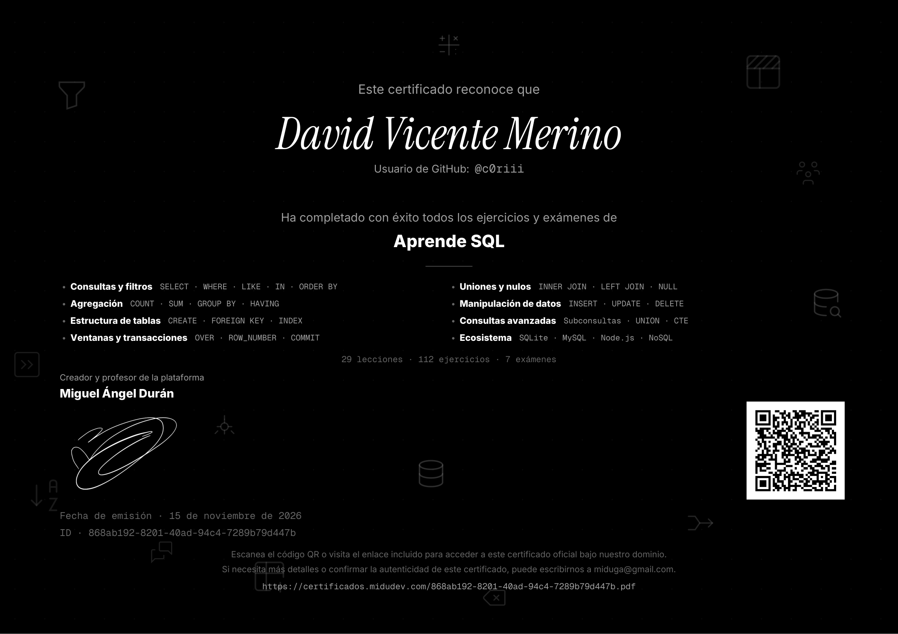
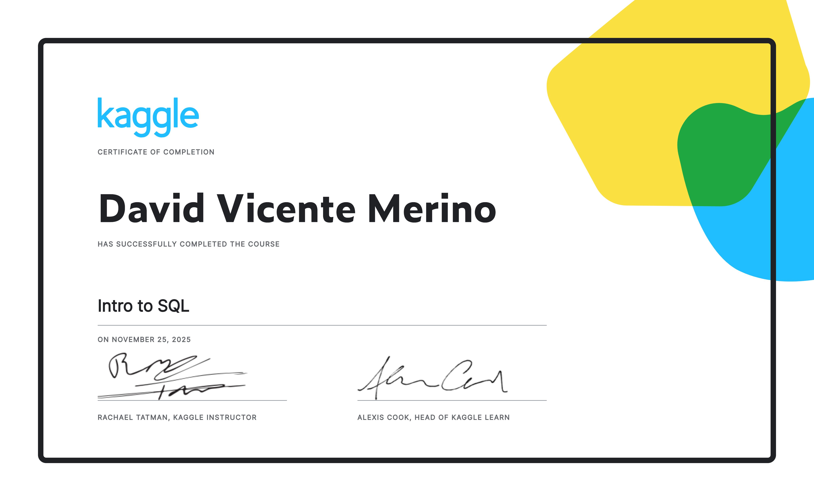
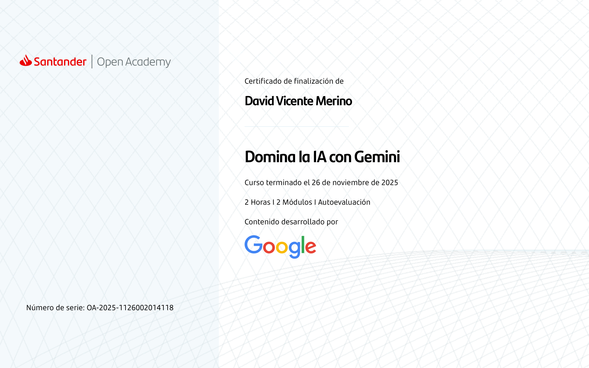
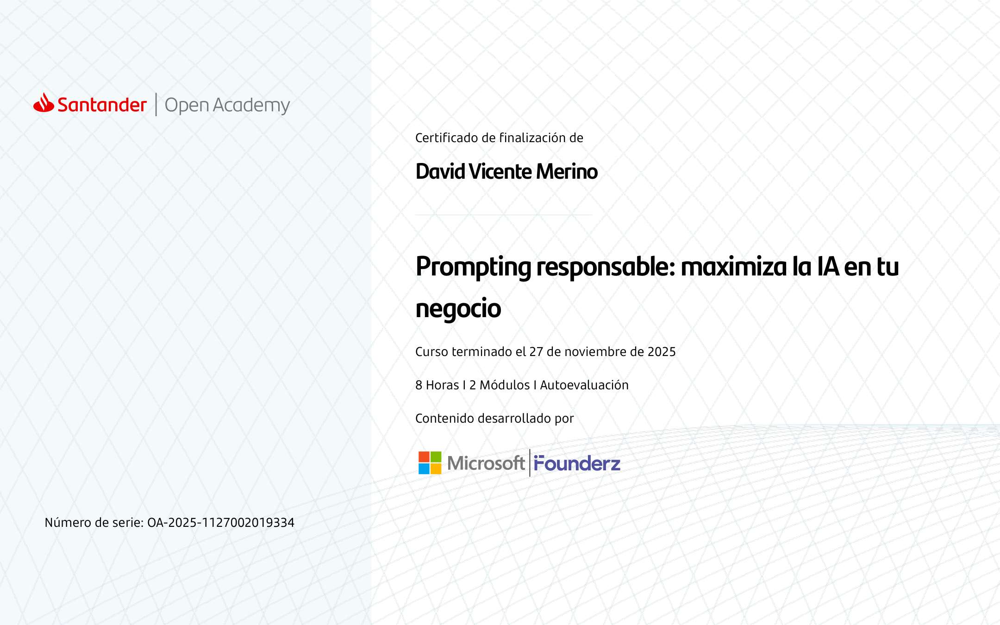

Grado en Ingeniería en Electrónica Industrial y Automática
Universidad de Valladolid
Construyo soluciones de datos para Supply Chain y entornos industriales. Pipelines en GCP, mentalidad AI First y mirada puesta en AI Platform Engineering.
Valladolid, España · Disponible para conectar01 — Sobre mí
Soy ingeniero en Electrónica Industrial y Automática y trabajo en la intersección entre datos, tecnología y operaciones. He evolucionado desde la digitalización de procesos industriales y el análisis de datos hasta la ingeniería de datos en la nube. Me interesan especialmente los retos de Data Engineering y Data Science, y actualmente estoy ampliando mi formación para integrar la inteligencia artificial en los procesos y avanzar hacia AI Platform Engineering.
02 — Formación
Universidad de Valladolid
Universidad de Valladolid · En curso
Español nativo · Inglés C1 · Francés B1
03 — Experiencia
Supply Chain
Desarrollo y mantenimiento de pipelines en GCP con BigQuery, Cloud Storage y Dataform. Diseño modelos Bronze/Silver/Gold, transformaciones SQL y controles de calidad. Optimizo consultas mediante particionado y clustering para mejorar rendimiento y eficiencia de costes, integrando datos maestros y soluciones SAP IBP/BTP con equipos funcionales.
Renault Group · HORSE
Análisis de datos con Power BI, Looker Studio y TIBCO Spotfire; mejora de documentación de maquinaria y migración de referencias de almacén en SAP S/4HANA. Colaboré con Google en el desarrollo de un agente de IA para mantenimiento de fábrica.
Local Supply Chain P.I. · HORSE
Digitalicé procesos de Supply Chain mediante aplicaciones Power Apps y automatizaciones en Python y PowerShell. Automaticé informes con Spotfire y VBA, ahorrando cinco horas semanales, y gestioné incidencias técnicas con un SLA de resolución del 85 %.
SEGULA Technologies · HORSE
Desarrollé scripts Python para analizar datos de producción y detectar desviaciones de calidad un 30 % más rápido. También trabajé con TIBCO Spotfire y creé herramientas internas con Power Apps y VBA para estandarizar el cumplimiento de normativas.
04 — Certificados
Formación en análisis de datos, programación e inteligencia artificial.






Los documentos originales con datos personales no se publican aquí. Las imágenes de certificados se muestran como referencia.
05 — Contacto
¿Quieres conversar sobre ingeniería de datos, analítica o inteligencia artificial? Estoy abierto a conectar.
Los datos personales de contacto del CV no se muestran públicamente por ahora.